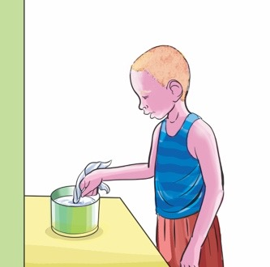
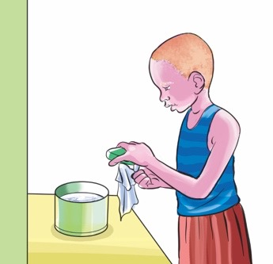
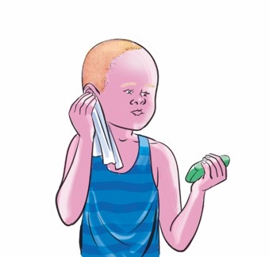
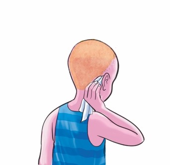

Ninazifahamu hatua za kusafisha masikio yangu.

Ninasafisha masikio yangu kwa kufuata hatua hizi.
1

Ninachovya kitambaa kwenye maji safi.
2

Ninapaka sabuni kwenye kitambaa kilichochovywa kwenye maji.
3

Ninasafisha sehemu ya mbele ya sikio.
4

Ninasafisha sehemu ya nyuma ya sikio.
5
Ninakausha sikio kwa kutumia taulo.
Swali
Umejifunza nini katika picha 1–5/ umejifunza nini katika hatua za kusafisha masikio?